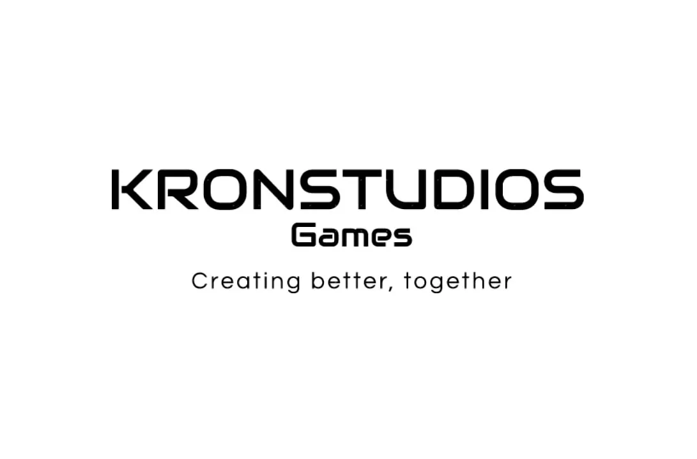
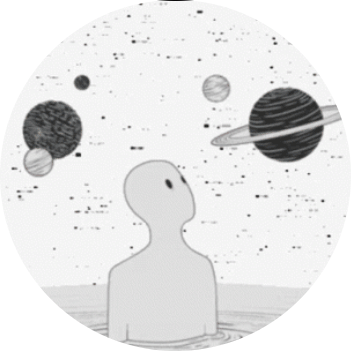

Team
The people behind the machine.

KronStudios is community-driven. We are open to collaborators. Get in touch.
INDEPENDENT GAME STUDIO

"We are building the machine before building the product. Discipline first. Features second."

Who we are and what we build.
KronStudios is an independent, community-driven studio building narrative-first, systems-grounded worlds. We don't separate the story from the system — everything we make is built on the argument that these disciplines belong together.
Worldbuilding that holds up under scrutiny. Mechanics that feel like they belong in the universe that contains them. Code that serves something larger than itself, while still having a self.
Structure comes before features. That's the machine we're building.
Active builds and ongoing initiatives under Kronstudios Games.
Post-apocalyptic narrative survival RPG. Vancouver, 2039. Yellowstone erupts. Society divides by elevation. The player climbs toward autonomy.
After the MSE-38 seismic event series and the Labor Day eruption, an ash cloud reshapes the atmosphere above Vancouver — a toxic band at fixed elevation that splits the world between those who fled upward beyond the Cloud, and those who survived below. Above The Line is the story of choosing to leave the fragile safety of a high-rise settlement and travel upward.
The next project is in early concept. Details to follow when the time is right.
"Everything we make is an argument that these things belong together."
— KronStudios
The people behind the machine.
KronStudios is community-driven. We are open to collaborators. Get in touch.
Open to collaborators, contributors, and questions.